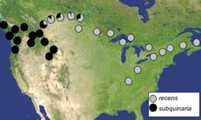
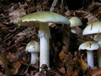
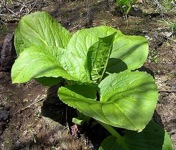
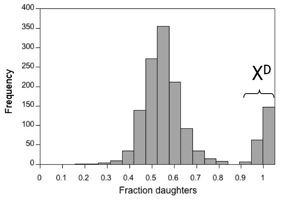
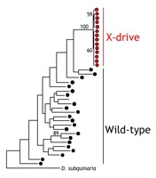
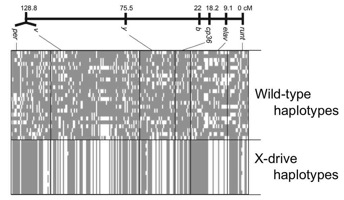
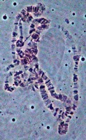
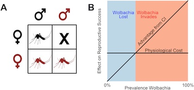

Research
Broadly, we are interested in the evolutionary consequences of ecological and genetic interactions: organisms with their environment, males with females, hosts with parasites, and genes with other genes. Below we outline the topics we investigate to explore how these interactions shape genetic and phenotypic diversity in natural populations.
How do organisms adapt to their environment?
We are interested in the genetic basis of ecologically important traits and how evolutionary forces such as selection and gene flow interact in the processes of adaptation and speciation.
Evolution of reproductive isolation in Drosophila subquinaria
An unanswered question in the field of evolutionary biology is whether the factors that complete speciation between two species can initiate reproductive isolation within a species. To address this question, we are studying behavioral isolation between Drosophila subquinaria and D. recens and among populations of D. subquinaria. Where both species occur, D. subquinaria females discriminate against D. recens males, while D. subquinaria females from outside the region of overlap do not. Moreover, these sympatric D. subquinaria females have become so choosy that they now discriminate against allopatric males from their own species. We are investigating whether the factors that complete the process of isolation between D. subquinaria and D. recens have also initiated isolation among populations of D. subquinaria. We are also working on identifying the selective mechanisms by which mate preferences and signals have diverged among populations.
Components of this work are in collaboration with Howard Rundle at the University of Ottawa and John Jaenike at the University of Rochester.

Evolution of toxin resistance in mushroom-feeding Drosophila
Many species within the quinaria group species specialize on eating mushrooms, and are highly tolerant of potent toxins that occur in some mushrooms. Some of these toxins, such as a-amanitin, can kill humans and nearly all other eukaryotes if ingested. Within the quinaria group, some species have switched from eating mushrooms to decaying vegetation, and have also lost resistance to these toxins. We are investigating the evolutionary history and genetic basis of toxin resistance in the quinaria group. Ultimately, we want to know the genetic mechanism for this unique adaptation and the selective forces that maintain it.
This work is in collaboration with Clare Scott Chialvo at Appalachian State, Laura Reed at the University of Alabama, and Thomas Werner at Michigan Technological University.


How does the genetic environment affect gene molecular evolution?
Just as an organism interacts with its environment and with other individuals, the evolution of a gene is shaped by where in the genome it occurs and which genes occur nearby. For example, factors such as the pattern of inheritance, the level of local recombination, and the presence of selection at nearby genes can have significant consequences for how a gene responds to selection and also for patterns of long-term genome evolution.
Molecular evolutionary effects of X-chromosome drive in Drosophila
A 'selfish' driving X chromosome favors its own transmission by killing Y-bearing sperm during male sperm production. The death of the Y-bearing sperm allows the driving X to be passed on to 100% of the male's offspring, rather than the usual 50%, which also results in the production of all daughters. Thus, a driving-X can increase in frequency in a population even if it adversely affects the fitness of its carriers. X-drive can have significant consequences for population growth and sexual selection, and it can even cause the host to go extinct due to a lack of males in the population. We are investigating the effects of X-chromosome drive on patterns of genetic and phenotypic diversity in natural populations of D. neotestacea and D. recens. We are especially interested in 1) how X-drive is maintained as a polymorphism in natural populations, and 2) how X-drive affects the evolution of genes that do not play a role in X-drive but that are tied up in inversions with driving and modifier loci.
Components of this work are in collaboration with Rob Unckless at the University of Kansas.

90% daughters carry a driving X chromoosme" />
 Evolutionary dynamics of Wolbachia infections in Drosophila
Wolbachia are maternally-inherited endosymbiotic bacteria that infect upwards of 60% of arthropods. Wolbachia are known primarily for their ability to manipulate the reproduction of its host, particularly cytoplasmic incompatibility (CI, shown below in panel A), but recently it has been discovered that Wolbachia may play a role in host-pathogen dynamics. We are interested in understanding the genetic and/or environmental factors facilitate or prevent the invasion of Wolbachia into novel host species. To address this question we are using Drosophila recens, which is naturally infected with Wolbachia, and its sister species D. subquinaria, which is not infected in the wild.

Panel A shows that cytoplasmic incompatibility (CI) results from the mating of an infected male (in red) and uninfected female (in black). Figure from Jiggins, PLoS Biology. 2017.